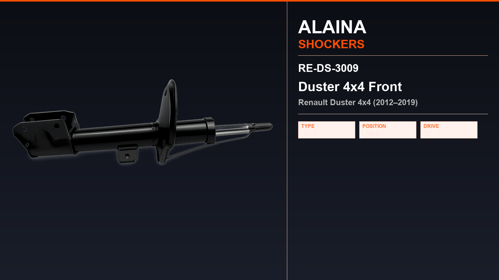
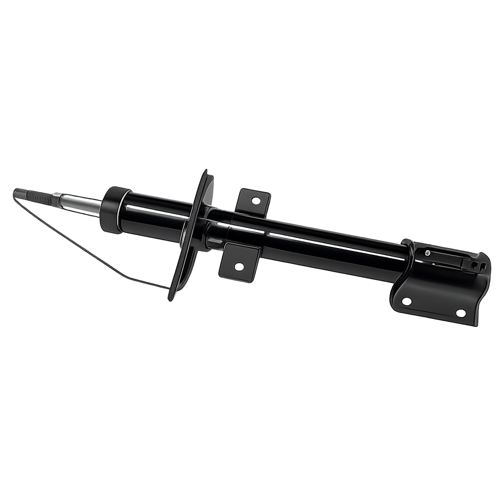

Renault · Rare Strut / Shock Absorber
Duster 4x4 Rear RE-DS-3011
Alaina rare strut for Renault Duster 4x4 (2012–2019). Listed in Technical Catalogue No.04. Built to OE reference dimensions and pressure-tested before dispatch.

")
Fitment
This rare strut is catalogued for Renault Duster 4x4 (2012–2019). Confirm the OE number and the old unit before ordering. For the same vehicle see other Alaina Renault parts below.